Internationalization
Topics:
What is internationalization?
Internationalization of software means designing it such that it supports or can be easily adapted to support the needs of users speaking different languages and having different cultural expectations, and enables worldwide communication between them.
Angular Translate
What is angular-translate?
angular-translate is an AngularJS module that helps you when it comes to i18n and I10n (internationalization of websites). It is a great tool for helping you support translations to several languages in your web app.
How does it work?
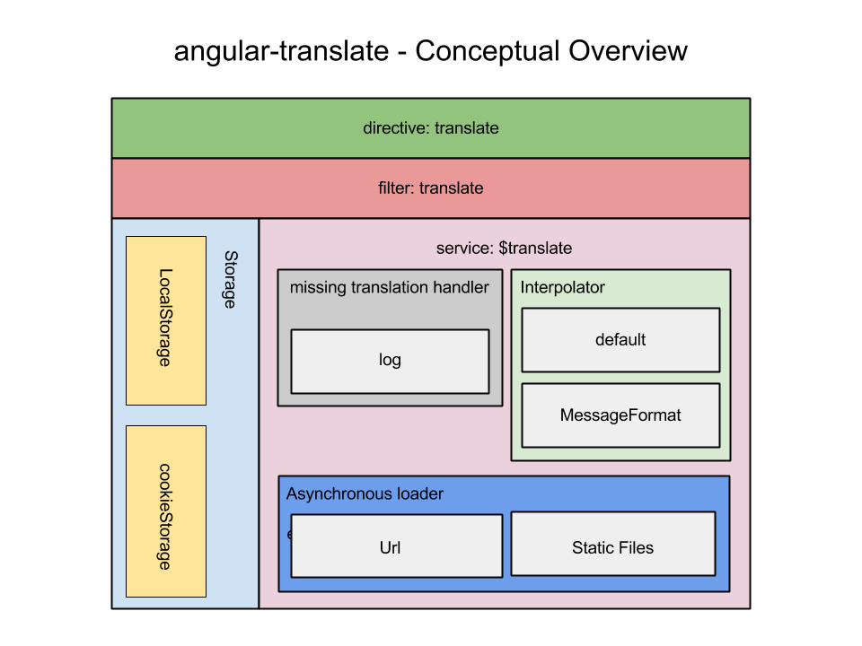Getting started with angular-translate
- Add to our packages the angular-translate library
- Inject angular-translate to our app
- Configure the angular-translate dependency through $translateProvider
Key parts of the configuration
- fallbackLanguage
- registerAvailableLangueKeys
- Translations
- useSanitizeValueStrategy
- preferredLanguage
Once the $translateProvider is set up, are you ready to roll?
So... how can we use the $translate?
There are 3 different ways to use $translate
- As a service
- As a filter
- As a directive
Using $translate service
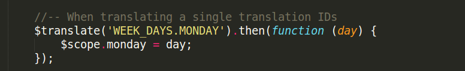Things to keep in mind when using $translate service:
- It always returns a promise
- DOES NOT PROVIDE A TWO-WAY DATA BINDING!!
- The only way to resolve the abscence of two-way data binding is to make use of $on
Using $translate service
==
Using $translate filter
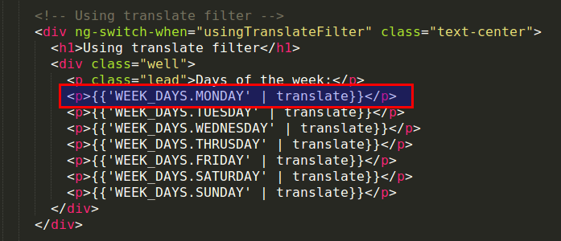Too many $watch expressions
Using $translate filter
==
Emergency only
Using translate directive
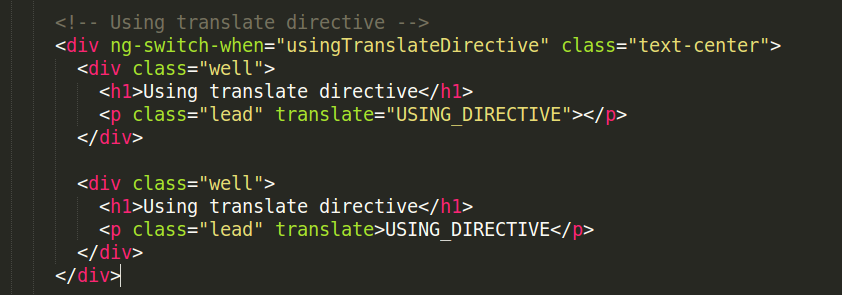Using translate directive
==
Variable Replacement
Using translate service
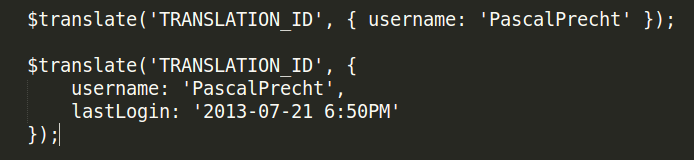Variable Replacement
Using translate filter
{{ 'TRANSLATION_ID' | translate:'{ username: "PascalPrecht" }' }}Variable Replacement
Using translate directive
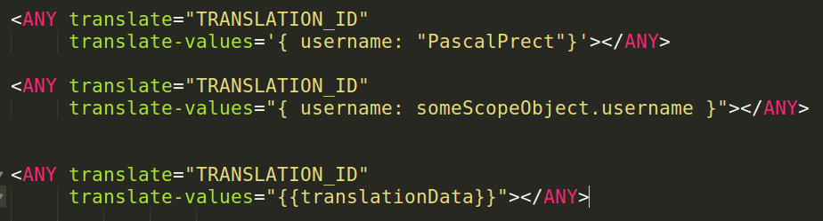Awesome, now what if we want to change the language at runtime?
Changing language at runtime
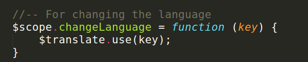It's time to think big...
Asynchronous Loading
Goal: Load the translations later during runtime
Three strategies:
- urlLoader
- staticFilesLoader
- partialLoader
Asynchronous Loading:
url Loader
- It's the simplest way
- Package to install: 'angular-translate-loader-url' 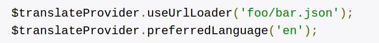
- Translation file only in one place
Asynchronous Loading:
static Files Loader
- Several localization files which match a specific pattern
- Package to install: 'angular-translate-loader-static-files'
- We need to specify a pattern:
Asynchronous Loading:
partial Loader
- When the application has multiple modules
- Loads the translation data of a language for a specific module we're currently on
- Package to install: 'angular-translate-loader-partial'
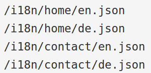
We need to configure $translateProvider to use the partial loader with this pattern: 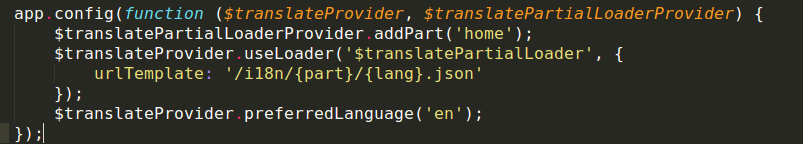
Okay, so this is the inital process but what about runtime?
Inject $translatePartialLoader into your controllers and services to make use of it.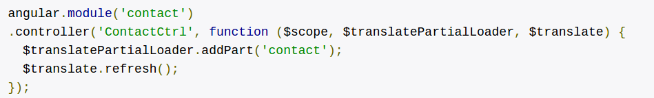
Since $translate.refresh() returns a promise, it works beautifully together with either ngRoute module or UI Router
Limitations of angular-translate
Pluralization and formatting to fit language conventions is not handled by angular-translate. We might require another module(messageFormat)Formatting and Pluralization
Formatting
In order to use the formatting we need to download the different locales (a locale is a specific geographical, political, or cultural region). We can download them from the following link:Supported locales in Angular
Formatting
We also need to add the following library, that will allow us to change the locale dynamically during runtime.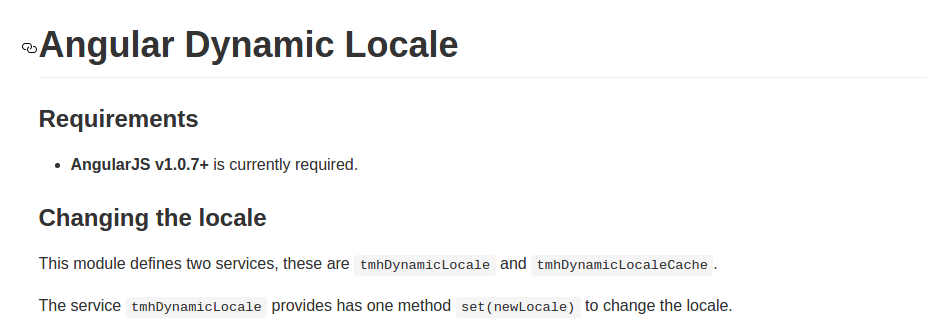
Formatting
Inject it to your controller tmhDynamicLocale and use is as the example below: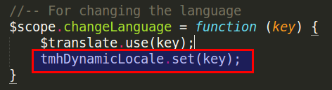
Pluralization
Pluralization
It's not supported by angular-translate nor by angularJS, but both of them suggest ussing: messageFormat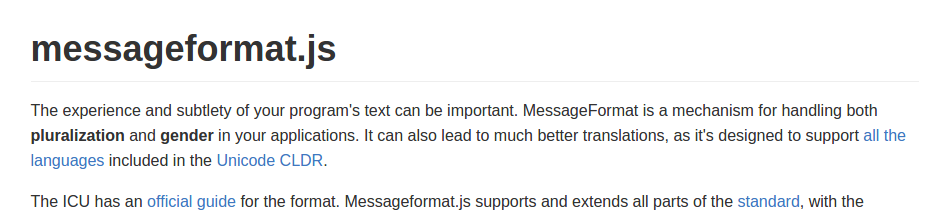
In order to use it we need to add to the config file:
$translateProvider.useMessageFormatInterpolation();Pluralization
This will allows us to add in our translations: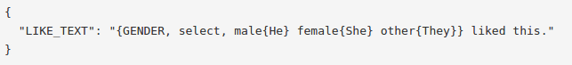
And we'll be able to use it, as the following shows:
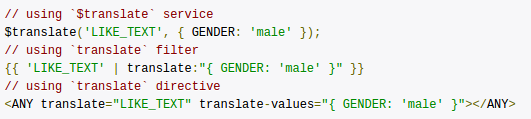
Pluralization

The problem with this that we cannot differentiate pluralization from variable replacement. In order to differentiate one from another we need to overwrite the interpolation temporarily.
Example: Overwrite interpolation temporarily
Pluralization
Overwriting the interpolation temporarily
- Add the following to the provider
- Setup a new translation table with translations that use default interpolation and MessageFormat interpolation 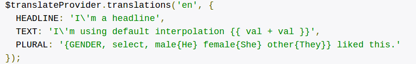
$translateProvider.addInterpolation('$translateMessageFormatInterpolation');Pluralization
Overwriting the interpolation temporarily
Using the different interpolations in... a service
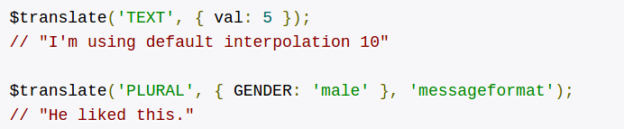Pluralization
Overwriting the interpolation temporarily
Using the different interpolations in... a filter
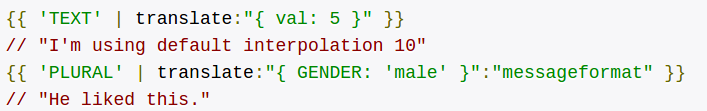Pluralization
Overwriting the interpolation temporarily
Using the different interpolations in... a directive
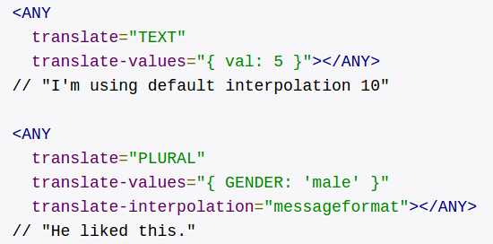UI-GRID
UI-GRID
When translating the headers: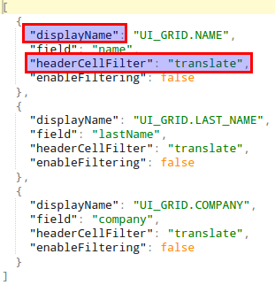
UI-GRID
When translating the filters:Plunker example